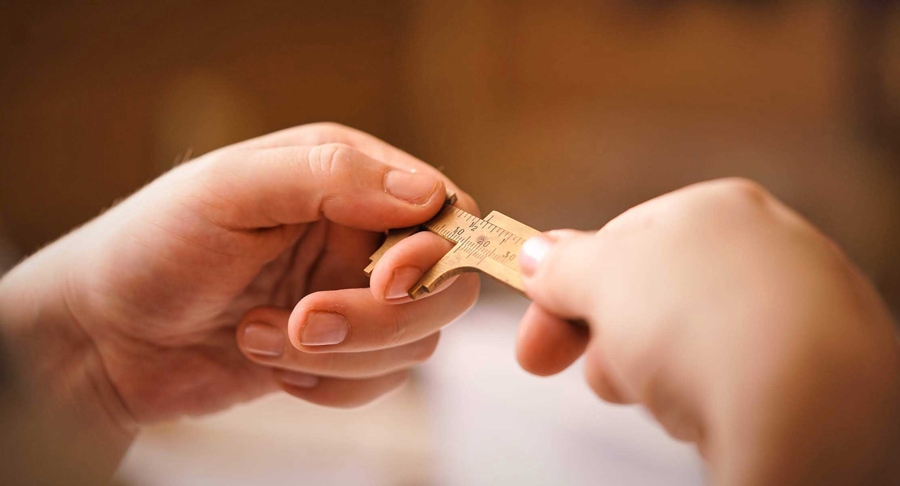
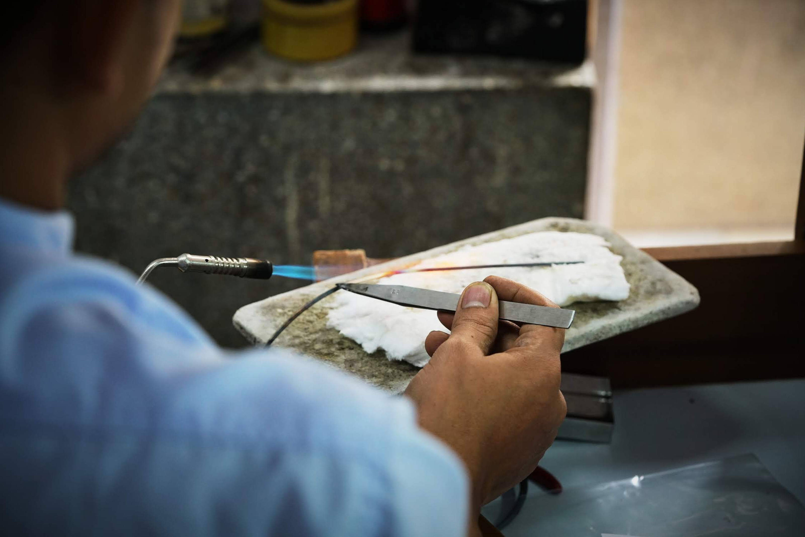
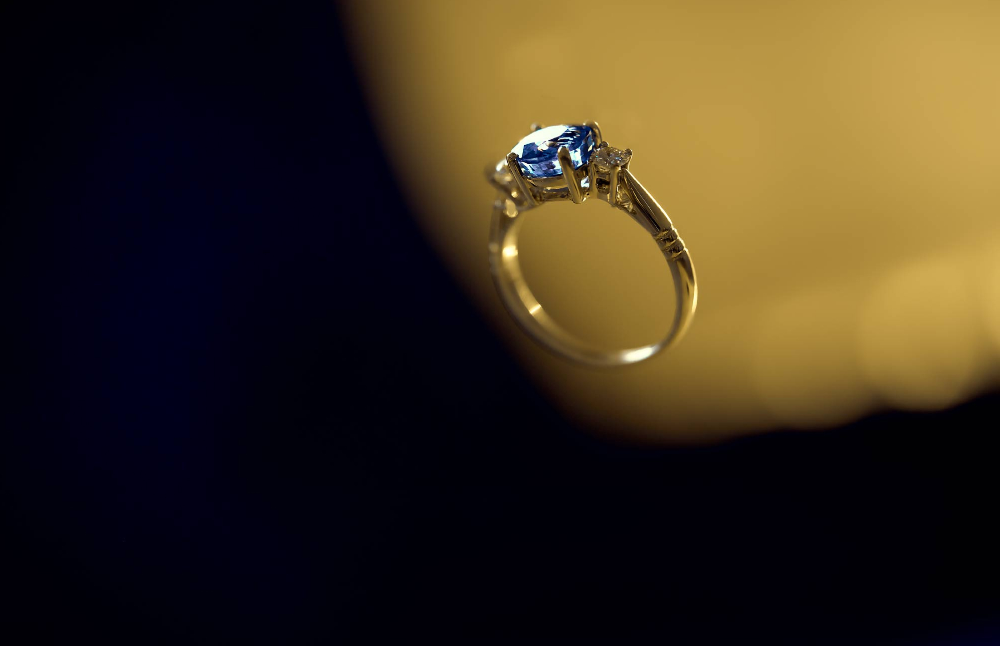

Every design is unique, and tailored to your wishes and requires a special process.
From intake to sourcing the right gem, and the work in the atelier. for a full understaning, we have explained the process below.
/01
consult
Each design begins with a consult with Alexandra to uncover your wishes and the purpose of your piece. Once discussed and the requirements are decided, Alexandra starts sourcing that perfect stone.
/02
Sourcing
Alexandra has build her own network of the best suppliers and traders for gem and diamons. Together with her suppliers, Alexandra sources from India to Antwerp, to find that one gem that will last a lifetime of joy.

/03
Design
Making the perfect design for your piece is pure precision. It requires knowing the stones we are working with. After having found the right stone for your special piece, Alexendra now makes sketches, including settings and stonecuts.

/04
Atelier
All designs are hand made in our atelier Jaipur. Apart from its vibrant culture, the Indian city is known for its jewellery and precious stone work world over. From diamond to gold and platinum to silver, Jaipur is pioneer in jewellery market.

/05
Delivery
When the final piece is ready for delivery when the payment is complete, the piece will travel by international post or with person.